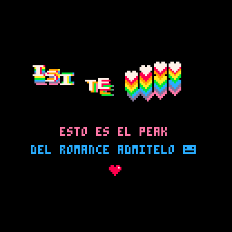

Para mi Isi
Bueno mi hermosa Isi. Lamento tener que haberte hecho esperar tanto. Si te preocupaba ser drámatica o mamona en tu carta en la mia lo voy a ser el doble así que cagaste Jsjasjajds. Además ahora tengo total libertad de escribir la extensión de texto que quieraaa, y no es muy bueno darle eso a gente que le gusta leer porque empiezan a escribir un poco exótico, pero lo siento, tendrás que aguantarte Jajajsja. Pero bueno, seguro ahora te estarás preguntando "Luciano ¿Por qué mierda hiciste una página wn friki?". Primero que todo, era de esperarse, tu sabes que me gusta programar. Segundo, me encantó tanto tu carta loca, como te diste la lata de imprimir la foto, hacer el código QR y llenarla de besos :'). Me dieron tantas ganas de responderte pero no podía simplemente copiarte :/. ¿No crees?
Entonces sipo, hice esta página. Me costó harto. Nunca había hecho una. Y ctm que es díficil. Ayudó la experiencia obviamente pero piensa que antes yo podía pasar 3 años practicando y perfeccionando un lenguaje de programación. Ahora tuve que aprender TRES para que esta mierda funcione como yo quería. Lo que el amor no? Pero yo lo encuentro super romántico. Tipo si alguien algún día cachase de esto yo lo flexeo. Le digo "mira po wn. A ver si algún día te la vives tanto por una loca". Además tu dijiste que te encantaba mi lado ñoño (sigo odiando la palabra) así que supongo que debes estar en tu peak ahora.
Bueno pero ¿Por qué una página po wn? Creo que el mejor modo de explicarlo es contandote mi experiencia leyendo tu carta. Voy a sonar muy dramático así que tendrás que perdonarme. Y ojalá te haga llorar tanto como tu lo hiciste con la tuya. OK. Primero estabamos en el auto, llorando los pobres niños. Ese fue fácil una de los momentos más dolorosos de mi vida. Cuando te fuiste estuve como 30 segundos intentando no mirar como te ibas. Después de eso como que por reflejo me puse a buscarte wn. Para qué? Sí ya te habías ido. Entonces me dio un ataque brígido. Se me pusieron los ojos llorosos escribiendo eso. No podía parar de llorar Isi es que te quiero tanto. Eres tan bonita Isi. Lo que dije de tus ojos era yo aprovechando el poco tiempo que tenía para decirte lo mucho que aún me quedaba por contarte. Son muy bonitos. De verdad.
Después estuve en la mierda. Tenía miedo de ver tu carta (NI EN MIL AÑOS ME HUBIERA IMAGINADO QUE ME HABÍAS PREPARADO ALGO ASÍ). Mi hermano me preguntaba que porque no hablaba y yo le decía que nada porque no quería hablar de ello. Entonces decidí abrir el sobre. Lo primero que sentí fue pánico porque vi los bobas y pensé que habías robado una de esas weas de plástico que ponen en las mesas para promocionar jugos o volás así en los restaurantes Jasjajsja. Pero después caché que era una foto nms. La dí vuelta y vi tus besos. Qué tierna Isii por dios quién te hizo tan romántica a tí? Estas cosas me encantan aunque no lo demuestre mucho. Diste en el clavo en tu carta. Me da yuyu. Yo me quedo callado o te miro raro pero tu agresión tierna siempre me encantó. Nunca lo encontré raro. Ni en la primera vez que me mordiste la mano. Simplemente me daba verguenza devolver el cariño pero tienes que saber que cada vez que me mordias la mano a mi me encantaba. Pero sí, los besos de tu carta me partieron. Los detallesss loca. Muestran cuanto uno piensa en la otra persona. También me hicieron llorar porque chucha, obviamente me iban a entrar ganas de darte un beso. Entonces empecé a leer tu carta. Te hubiera encantado que te grabase un video porque me hubieras visto llorar todo lo que quisieras (loca :p). Ahí estaba yo, hecho bolita y leyendo (YAAA QUÉ DRAMATICO). Estaba llorando pero también me reía. Tantas cosas hermosas que me escribiste Isi. No tienes idea el efecto que tiene eso sobre mi. Me hace querer ser mejor persona, porque alguien te quiere tal y como eres. Cuando dijiste en el auto que tu no cambiarias nada de mi. ESO ES LO MÁS HERMOSO QUE ME HAN DICHO JAMÁS. Me estoy poniendo a llorar mientras recuerdo. Te quiero mucho Isi de verdad. El tiempo que pasamos juntos lo amé en cada momento pero también pienso que el poco tiempo que tuvimos cortó mucho el potencial de lo que pudimos haber experimentado. De verdad Dios sabe que seríamos muy poderosos juntos.
Yapp, continuamos (de verdad que me cuesta jajajsja), mientras leía tu carta solo pensaba que no quería que se acabara nunca. Literalmente veía como iba por la mitad o tres cuartos y de verdad no quería que se acabe. Por eso amé tus pds. De verdad no quería que se acabe. Por eso pensé en hacer una página. Ojalá quedes loca con esto porque o si no estaría muy decepcionado. Listen. Cada día la página es distinta!!! Entonces en teoría cada lectura es única porque no tiene orden. Soy un genio no lo crees? Es como un modo de devolverte la mano. Yo se si es que en algún momento necesito ayuda o algo que me de fuerzas (perdón yo te advertí que iba ser dramático) voy a leer tu carta porque esss DIOS. Ahora imagínate cada vez que quieras leer la mía es ligeramente distinta o tiene algo nuevo. Yo lo encuentro la raja. Todo lo anterior que leíste no se va a desordenar pero lo que viene sí, por lo que no esperes que haya cohesion entre los párrafos a partir de ahora, piensa en ellos como cartas individuales de cosas que siempre te he querido decir.
Aaa por cierto, ese gif de abajo también lo programé yo (esto entra fácil dentro de las cosas más mamonas que he hecho en mi vida :p)

Algunas fotos locas